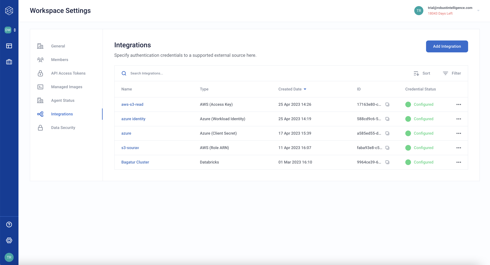

Configuring Integrations
Administrators can configure integrations for a Robust Intelligence instance. Integrations can provide data or compute resources to Robust Intelligence.
All configured integrations can be managed from the Integrations tab in Workspace settings. Only workspace administrators and organization administrators are allowed to configure and update integrations. Once an integration is configured all workspace member will be able to see and use the integrations.
Adding an integration through the Robust Intelligence web UI
An administrator can add or modify a integration that the Robust Intelligence instance can use.
Sign in to a Robust Intelligence instance.
The Workspaces page appears.
Click the three-dot menu at the right side of a workspace and select Manage Workspace.
Alternately, select Workspace Settings from a workspace page. The Workspace Settings page appears.
Click Integrations in the left navigation bar.
The Integrations configuration pane appears.
Click Add Integration.
The Add Integration dialog box appears.
In Name, type a name for the integration.
From the Integration Type drop-down, choose a type.
Supported types are AWS S3, Azure Blobstore, Databricks Deltalake, HuggingFace, and Custom.
Fill in the necessary fields depending on the integration.
(Optional) Click Add Variable to add specific environment variables as key/value pairs.
A set of Key and Value fields appears with a Sensitivity drop-down selector between them.
(Adding a variable) In Key and Value, type a key and the value for that key.
(Adding a variable) From the Sensitivity drop-down, select a sensitivity level for the key/value pair.
Sensitivity levels are Not sensitive, Workspace level, and Members level.
Sensitive information, such as access tokens, are stored in a secret manager service built using Hashicorp Vault.
If the sensitivity is Member level, individual members need to individually configure their sensitive credentials for this integration. If the sensitivity is Workspace level, administrate configure the sensitive credentials for this integrations
Click Save Integration.
The new integration is now available to the RI Platform.
Entering integration credentials through the Robust Intelligence web UI
When an integration requires Member Level credentials, each user needs to enter their own credentials.
Sign in to a Robust Intelligence instance.
The Workspaces page appears.
Click the three-dot menu at the right side of a workspace and select Manage Workspace.
Alternately, select Workspace Settings from a workspace page. The Workspace Settings page appears.
Click Integrations in the left navigation bar.
The Integrations configuration pane appears.
Select an integration from the list where Credential Status is Not Configured
Click the three-dot menu and select Edit Integration.
Fill in the necessary field value where Sensitvity is Member Level.
Click Save Integration.
The new integration is now available to the RI Platform.
Adding Cloud Object Storage during deployment.
Cloud Object Storage (e.g., AWS S3, Azure Blob Storage, or Google Cloud Storage) can also be configured during deployment time. A default Object Storage needs to be configured during deployment. These do not appear in the Integrations UI. More information on this can be found here.